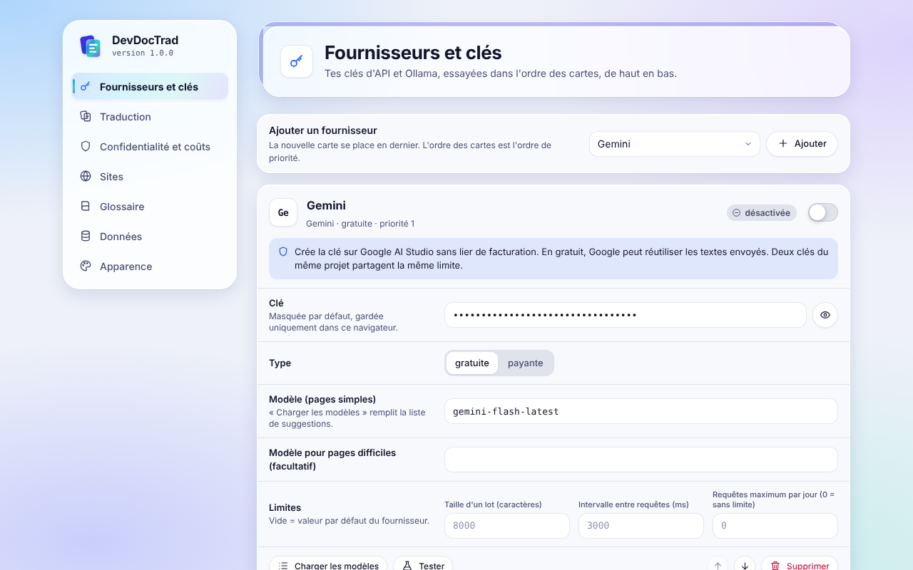

Věrný překlad
Větu po větě, ve stejném pořadí, bez shrnutí, vynechávek a přídavků. Rozšíření překládá, nevysvětluje.
Novinka ve verzi 1.2: dabing videí na jakémkoli webu
Věrně překládá technickou dokumentaci a weby pro programátory do tvého jazyka, aniž by kdy sáhlo na kód.

Pro všechny, kdo zápasí s dokumentací v cizím jazyce: oficiální dokumentace, README a issues na GitHubu, Stack Overflow, fóra, technické blogy, přednášky z konferencí.
Větu po větě, ve stejném pořadí, bez shrnutí, vynechávek a přídavků. Rozšíření překládá, nevysvětluje.
Příkazy, funkce, API, cesty a URL se nikdy nepřekládají. Odkazy, tučné písmo a bloky kódu zůstávají na místě.
Ve výchozím stavu jazyk prohlížeče, ze 37 jazyků. Ruský vývojář dostane ruštinu, japonský japonštinu.
Návody a přednášky: titulky se překládají živě přímo ve videu, i na YouTube. Bez titulků? Hlas se zdarma přepíše (Groq Whisper). Volitelné předčítání. Dabing: překlad čte hlas prohlížeče.
Bezplatné úrovně Gemini, Groq, Mistral, OpenRouter, nebo místně Ollama. Placený klíč zůstává zablokovaný, dokud nenastavíš limit.
Nahradí text, nebo ukáže překlad pod každou větou. Jedno kliknutí nebo Alt+Shift+T zpět k přesnému originálu.
Žádné statistiky, žádné sledování. Klíče zůstávají v prohlížeči. Citlivé stránky se nikdy nepřekládají automaticky.
Kousek dokumentace v angličtině. Přepni režim: text přejde do tvého jazyka, kód zůstane beze změny.
Call readFile() to load the file, then JSON.parse() to turn it into an object.Zavolej readFile() pro načtení souboru a pak JSON.parse(), abys z něj udělal objekt.
import { readFile } from "node:fs/promises";
const text = await readFile("config.json", "utf8");
const config = JSON.parse(text);All options in the API referenceVšechny volby v referenci API
Blok kódu, názvy funkcí i odkaz jsou ve všech třech režimech stejné.
Přednáška v angličtině: překlad se objevuje živě v obraze, pod původní větou. Tady jde o simulaci.
npm install lru-cache.Nejdřív nainstaluj knihovnu příkazem npm install lru-cache.fetch() with cachedFetch().Pak nahraď každé volání fetch() voláním cachedFetch().



Firefox: jedním kliknutím z addons.mozilla.org. Chrome, Edge a Brave: ručně několika kliknutími, do zveřejnění v obchodech.
chrome://extensions (nebo edge://extensions, brave://extensions).Nainstalovat z addons.mozilla.org
Firefox 140 nebo novější. Aktualizace přicházejí samy.
about:debugging#/runtime/this-firefox.:free), nebo nainstaluj Ollama. Pro hlas ve videích bez titulků použij Groq.Ano. Rozšíření je zdarma a open source. Používá tvé vlastní klíče na bezplatných úrovních poskytovatelů, nebo Ollama na tvém počítači. Nikdy nepřejde na placený klíč a placený klíč zůstane zablokovaný, dokud sám nenastavíš denní limit.
Vestavěný překlad překládá i názvy funkcí, příkazy a někdy i kód a často rozbije rozvržení. DevDocTrad rozpozná kód, identifikátory a URL a nikdy na ně nesáhne, zachová odkazy a formátování a umí ukázat originál vedle překladu.
Zapni ve vyskakovacím okně „Překládat hlas ve videích“ nebo stiskni Alt+Shift+V. Má-li video titulky (YouTube, přednášky, kurzy), přeloží se a zobrazí v obraze. Jinak se zvuk rozdělí na několikasekundové úseky, přepíše ho Groq Whisper s tvým bezplatným klíčem Groq a pak se přeloží. Tlačítko reproduktoru předčítá překlad hlasem prohlížeče. Nic se neplatí. Pro dabing zvol „Titulky + přeložený hlas (dabing)“: hlas prohlížeče čte překlad v rytmu videa.
Ukládají se jen do místního úložiště prohlížeče, nikdy se nesynchronizují a posílají se jen příslušnému poskytovateli. Nikdy se neobjeví v URL, protokolu ani ve zprávě pro stránku.
Jen k poskytovateli, kterého sis vybral, nebo nikam s Ollama. Na bezplatných úrovních mohou Google a Mistral text znovu použít: pro soukromé stránky raději Ollama. U hlasu jdou do Groq jen krátké úseky zvuku.
37 cílových jazyků, mezi nimi čeština, angličtina, francouzština, španělština, němčina, ruština, čínština, japonština a arabština. Stránky mohou být v jakémkoli jazyce. Rozhraní rozšíření existuje v 36 jazycích (arabština, hebrejština a perština zprava doleva) a řídí se prohlížečem. Tento web je také ve 37 jazycích.
Ano, licence MIT: můžeš ho použít, upravit a šířit, pokud zachováš upozornění na licenci.